МОИ УВЛЕЧЕНИЯ
ТОЧЕЧНАЯ РОСПИСЬ
Как-то раз в руки мне попал контур, хоть это и не странно ведь я росла в семье художников. Тогда я еще не знала о точечной росписи, баловалась, рисовала линии. Не знаю, что пришло мне в голову, но я стала ставить точки ...много точек... И то, что получалось мне очень даже нравилось. Родители оценили, я начала ставить точки на стекле, бутыках. Вскоре я начала разрисовывать бутылки и бокалы на свадьбы.
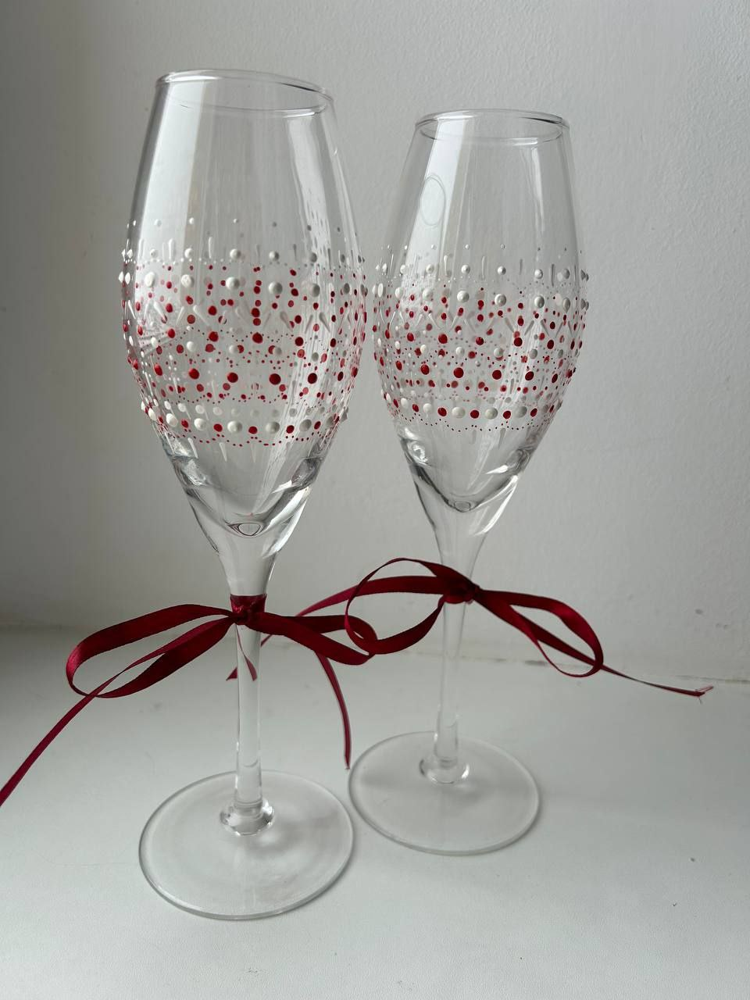
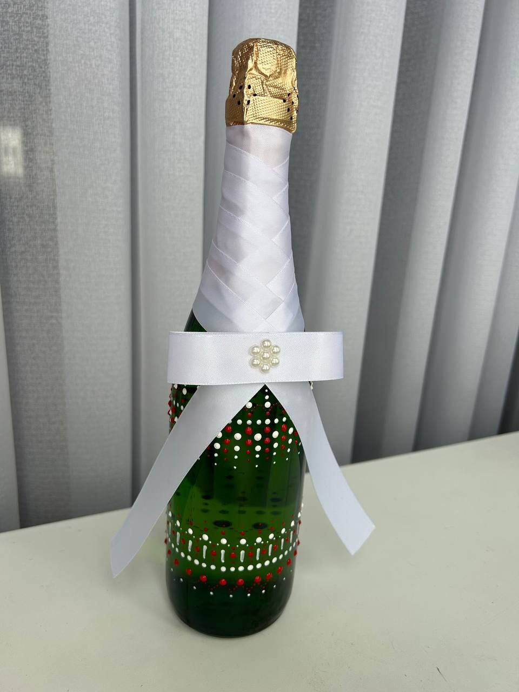
АКТИВНЫЙ ОТДЫХ
Общение с друзьми и родственниками для меня очень ценно, а еще более ценно когда мы проводим вместе время активно, пополняя нашу копилку положительными эмоциями!
-
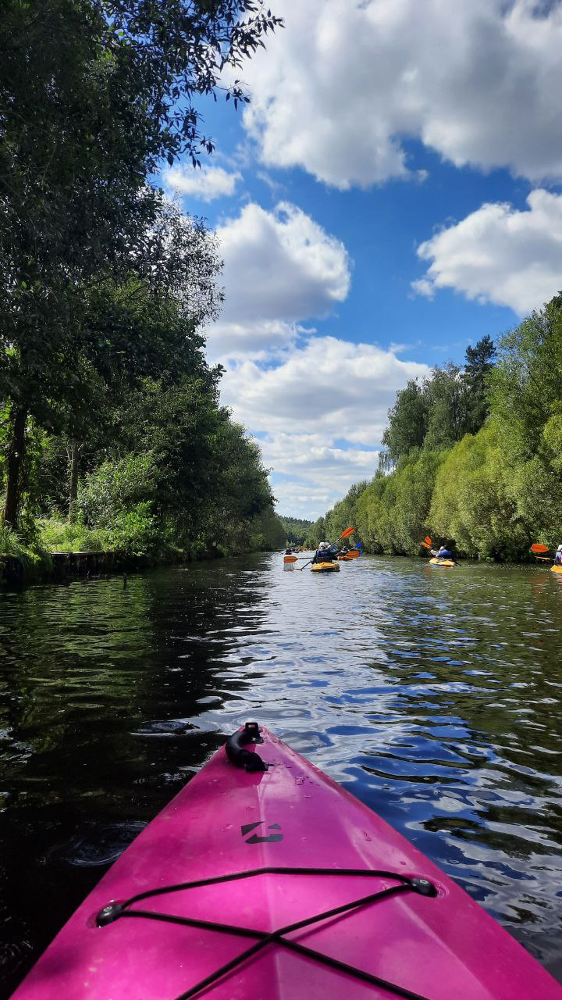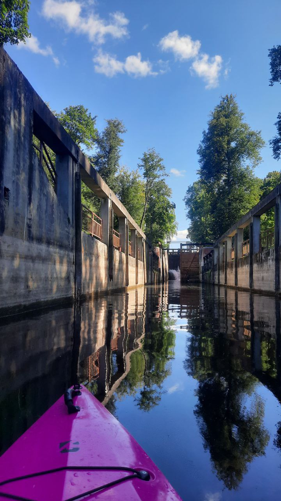
-
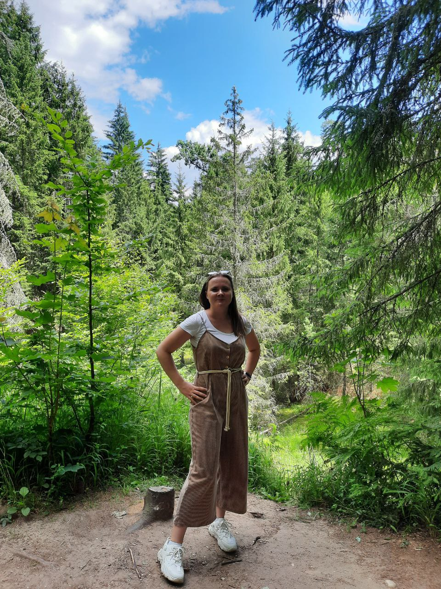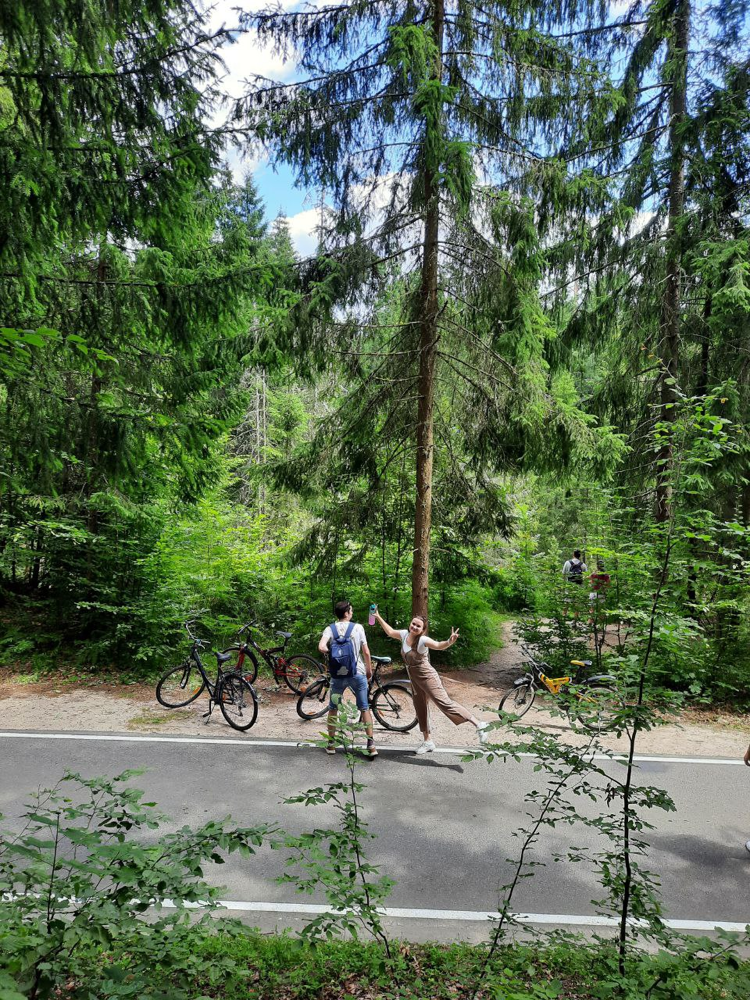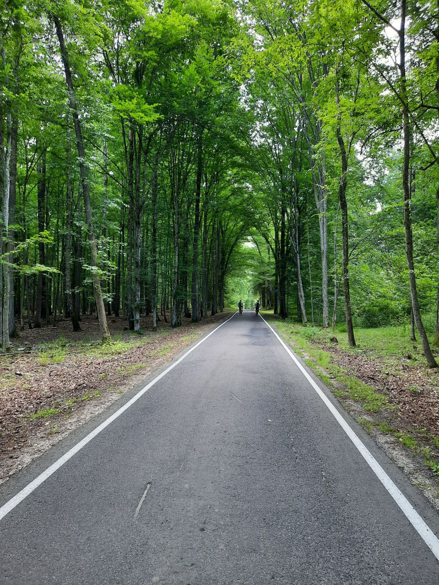
-
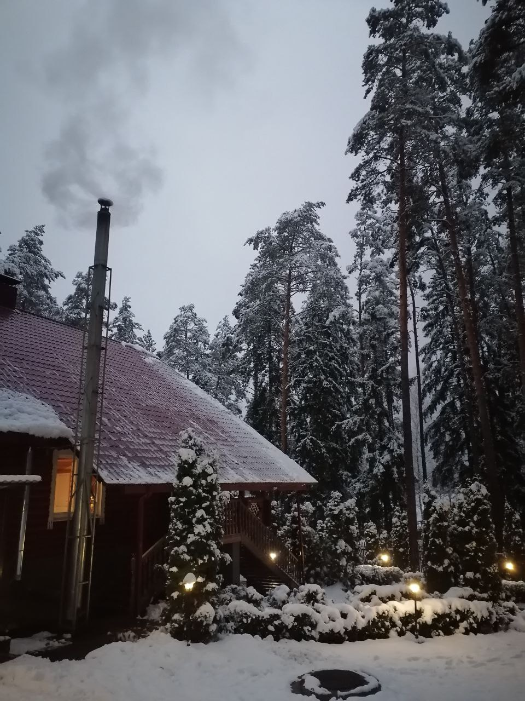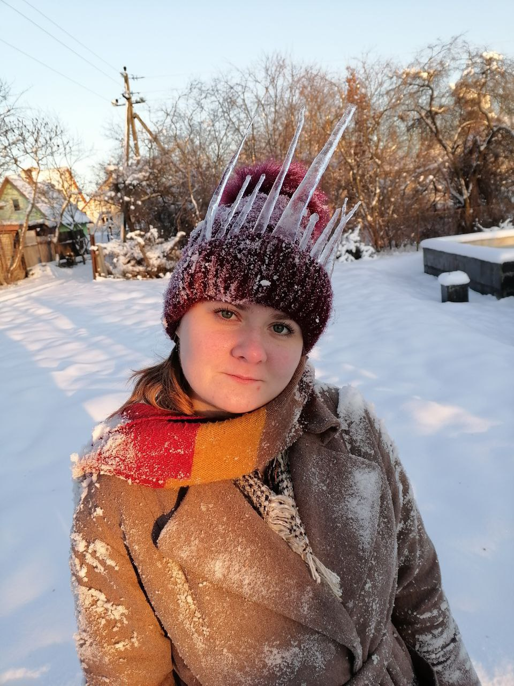
-
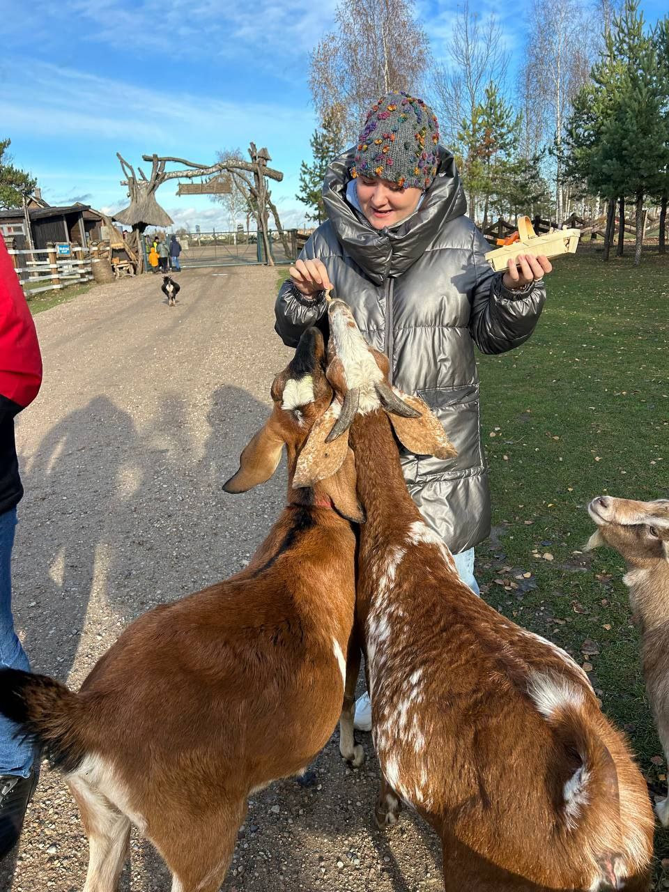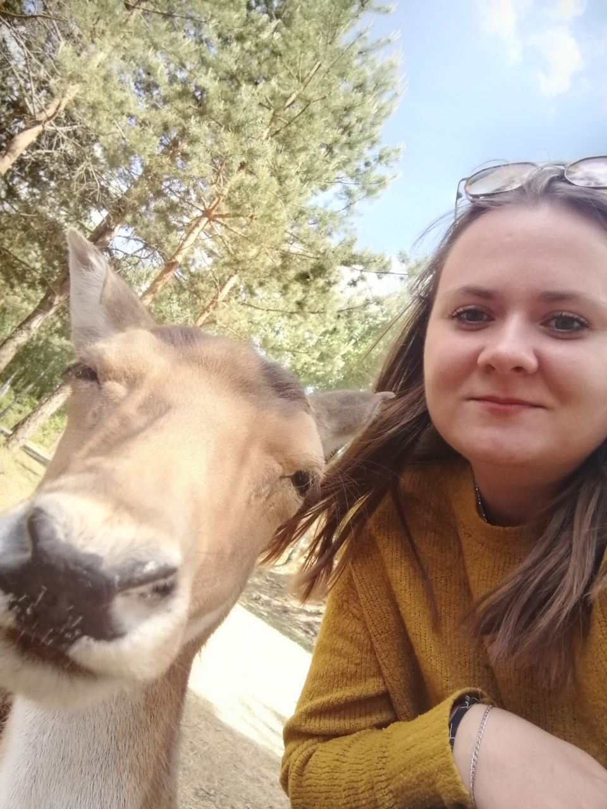